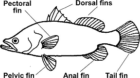

|
|
| Glossary
A | B | C | D | E | F | G | H | I | J | K | L | M | N | O | P | Q | R | S | T | U | V | W | X | Y | Z The glossary explains some scientific terms used in the website. Adaptation: The features and behaviour of living things that help them better survive in their environment. Adductor muscle: In bivalves, the muscle that keeps their shells shut. Algae: See seaweeds. Antennae: A pair of long, jointed, flexible structures on the head used to sense the surroundings. Compare with tentacle. Ambush predator: A predator that does not actively hunt its prey. Instead, it hides and waits for prey to come within reach (thus they are sometimes also called sit-and-wait predators). Some ambush predators rely on camouflage to avoid being seen by prey. Some may even lure prey closer, e.g., the frogfish. While many ambush predators generally don't move about very quickly, most are able to rapidly snatch prey that comes close enough. Arthropods: Animals from the Phylum Arthropoda. Their bodies are supported by a hard outer casing (called the exoskeleton) instead of a back bone. They have jointed limbs. Arthropods include insects, spiders, crabs and prawns. Ascidians: Animals from the Class Ascidiacea. These animals belong to the same Phylum Chordata as us vertebrates. Vertebrates belong to the Subphylum Vertebrata while ascidians belong to Subphylum Urochordata. Autozooid polyps: In leathery soft corals, these are polyps with long stalks and tiny branched tentacles that emerge from the shared tissue. See also siphonozooid polyps. Axial corallite: In branching acropora corals, it is the large corallite at the tip of the branch. See also radial corallite. Blade: the leaf-like portion of a seaweed. Bilateral symmetry: Symmetrical in two halves. Humans are bilaterally symmetrical. You can draw a line down the centre of our body and the left and right side should be more or less identical. See also symmetrical along five axes. Bivalves: Animals from the Phylum Mollusca, Class Bivalvia. They usually have a hinged two-part shell. Examples include mussels, clams and oysters. Bryozoans: Animals from the Phylum Bryozoa. Byssus threads (sometimes spelt byssal): Tough, adhesive fibres produced by bivalves to attach themselves to a firm surface. A gland in the foot produces these fibres. Examples of animals that produce byssus threads include mussels and Fan shells. Calcareous: made of calcium carbonate, thus usually hard or sharp. Camouflage: An animal's shape, colour or pattern that allow it to blend in with its surroundings so it is less likely to be noticed by predators or prey. Capsule, egg: see egg capsule Carnivore: An animal that eats the flesh of other animals. Case, egg: see egg capsule Cerata: In some sea slugs and nudibranchs, these are the many projections on the body, often finger-like, but sometimes also leafy such as in the Bushy sap-sucking slug. Chlorophyll: See photosynthesis. Cilia: tiny hairs, usually beating hairs that create a current. Found on various body parts of various animals for various uses. In some animals, cilia play a part in gathering or moving food. Cirri: In feather stars, it is the claw-like appendage on the underside that the animal uses to grip the surface. Class: See about scientific names. Cnidarians: (Pronounced 'nai-day-rians', the 'c' is silent.) Animals from the Phylum Cnidaria. All are aquatic and one of the features unique to them are stinging cells used for protection and to catch prey. Examples include jellyfish, sea anemones and corals. Colonial animals: In cnidarians, ascidians and bryozoans, a colonial animal is made up of individual animals, called zooids, that are structurally joined to one another and share resources. Examples include hard corals and sea pens. See also polyp and zooid. Corallite: The skeleton produced by a single polyp of a hard coral. Crustaceans: Animals from the Phylum Arthropoda, Subphylum Crustacea. Most are marine and most have two pairs of antennae. Examples include crabs, prawns and barnacles. Deposit feeder: An animal that collects food particles which settle on the sea bottom. For more details. Detritus: Dung and decaying matter. A detritivore is an animal that eats detritus. For more details on detritus. Dorsal fin: See fins of a fish. Echinoderms: (Pronounced 'ee-kai-no-derms'.) Animals from the Phylum Echinodermata. They are symmetrical along five axes and have tube feet and spines. Examples include sea stars, brittle stars, sea cucumbers, sand dollars and sea urchins. Ecosystem: Here are more details. Edible: In this website, it means the plant or animal is eaten by humans. These, however, must often first be properly processed and cooked before they can be safely consumed. Egg capsule: A protective 'container' for one or several eggs. The case may be leathery and hard, or gelatinous. Animals that lay egg capsules include snails and squids. Some examples of egg capsules: Drills, cephalopods, Spiral melongena. Some animals lay their eggs in a mass or strings, coils and ribbons. Encrusting animals: Animals that grow as a thin, spreading crust or layer over hard surfaces such as rocks and shells. Barnacles are an example. Endangered: see threatened Exoskeleton: See arthropods. Family: See about scientific names. Filter feeder: An animal that collects food particles which are suspended in the water by actively creating a current through its body or using body parts as a sieve. For more details. Fins of a fish: This diagram shows some of the types of fins on a typical fish.  Food chain: The transfer of energy as one living thing eats another and is in turn eaten. A food chain typically begins with the energy first created by a living thing that makes food through photosynthesis. Free-swimming larvae: See metamorphosis. Gastropods: Animals from the Phylum Mollusca, Class Gastropoda. They generally creep on a muscular foot. Many have a spiralled shell. Some gastropods such as slugs, however, lack shells. Gills: the breathing organ of an aquatic animal. Usually a complex structure that provides a large surface area for exchange of oxygen and carbon dioxide with the surrounding water. Genus: See about scientific names. Habitat: Here are more details. Herbivore: An animal that eats plants. Hermaphrodite: An animal with both male and female reproductive systems. In some animals, both systems are present at the same time. Other animals may change from one gender to another. Many marine animals are hermaphrodites. These include some fishes. Holdfast: the part of a seaweed that anchors it to the ground or a hard surface. Unlike true roots, this merely grips the surface and does not absorb water or nutrients. Intertidal zone: A coastal area that is covered by water at high tide and exposed at low tide. Why is the intertidal zone special?; More about tides Invertebrates: Animals that do not have backbones. Instead, their bodies are supported by an exoskeleton (as in arthropods) or body fluids (as in sea anemones). Invertebrates include insects, worms, snails, crabs, sponges and sea stars. More than 90% of all animals are invertebrates. Larva: See metamorphosis. Lateral line: In many fishes, this is a series of special sense organs arranged in a line along the sides of their bodies. Not all fishes have a lateral line. Mantle: In molluscs, it is a a thin, specialised tissue of the body that produces the shell. Mantle skirt: In nudibranchs, this refers to the thinner edges of the body. Mass, egg: see egg capsule Medusa: In cnidarians, a medusa is an animal with a jellyfish-like shape: an umbrella-shaped body with the mouth facing downwards and surrounded by tentacles. Many cnidarians go through this free-swimming stage as medusae in their life cycle. Metamorphosis: Animals that undergo metamorphosis have a life cycle in which they change shape abruptly and drastically. This shape change usually takes place during the larval stage of the life cycle, i.e., just after hatching from the egg. A larva looks very different from the adult and may go through several different shapes before eventually taking on the adult form. Many marine creatures have a free-swimming larval stage during which they disperse to colonise new places. Here is an example of metamorphosis in shrimps. Here are some examples of the typical larvae of some common marine animals. Molluscs: Animals from the Phylum Mollusca. They are soft-bodied and many have a radula. Many, such as snails and clams, produce a protective shell. Others don’t have a shell, such as slugs, octopuses, squids and cuttlefish. Moulting: In arthropods, this is the periodic shedding of the exoskeleton. The shed skin is called a moult. For more detail on how this happens in a crab.
Papulae: in echinoderms, these are tiny transparent finger-like structures that appear on the upperside of a sea star. Parapodia: In sea hares and sacoglossans, this is a pair of 'wings' or flaps that cover the centre part of the body. Pectoral fin: See fins of a fish. Pedal disk: In cnidarians such as sea anemones, this is the flat circular portion of the animal at the base of the body column. This may be used to cling to a hard surface or to anchor the animal in the sand or a crevice among corals or coral rubble. Pedicellariae: In some echinoderms such as sea stars and sea urchins and sand dollars, these are tiny pincer-like structures found all over the body. They are used to keep the body clear of parasites, encrusting organisms and debris. Periostracum: fine hairs growing on the shell of bivalves or marine snails (gastropods). Petaloid: In some echinoderms such as sand dollars, sea urchins and heart urchins, this is the petal-shaped pattern on the upper side of the skeleton. The pattern is made up of a series of tiny holes in the skeleton. Tube feet emerge through these holes. Pelvic fin: See fins of a fish. Pharynx: in flatworms, a part of the gut that can be pushed out of the mouth to engulf prey. Photosynthesis: A process that uses sunlight to make food from simple chemicals. Nearly all plants can carry out photosynthesis. Phylum: See about scientific names. Phytoplankton: See plankton Pinnules: In feather stars, these are tiny finger-like structures that arise in rows along the arms and which give the animal its feathery look Plankton: Microscopic plants and animals that drift in the sea, some examples. Microscopic plants are called phytoplankton, while microscopic animals are called zooplankton. Poisonous: A poisonous living thing can harm if it is eaten because it produces toxic substances. Not all poisonous organisms are venomous. For example, you are unlikely to die if a pufferfish bites you, but you may if you eat it. Polyp: In cnidarians, a polyp is an animal with a cylindrical body which is attached at one end. The other end has a central mouth surrounded by tentacles. A sea anemone is a large, solitary polyp. A coral is made up of many small polyps that are structurally joined to one another as a colonial animal.
Predator: A carnivore (flesh-eating animal) that hunts, kills and eats other animals. Some predators, however, may not actively hunt their prey and simply hides and waits for prey to come within reach. These are called ambush predators. Prehensile: adapted for grasping, especially for wrapping around an object. The seahorse, for example, has a prehensile tail to grip surrounding objects. Prey: An animal that is hunted, killed and eaten by a predator. Proboscis: A long, retractable tube located on the head. In gastropods, this is an extendible tube which contains the radula, mouth and gullet. Prosobranchia: a subclass of the Class Gastropoda. Most prosobranchs are snails with well developed shells and breathe through gills. Pseudotentacles: in a flatworm, a pair of ear-like structures at the front end of the animal made out of folded edges of its body. Pseudotentacles are not 'proper' tentacles like those of a snail. Pulmonata: a subclass of the Class Gastropoda. Pulmonates can breathe atmospheric air. The gills are reduced or lost and the mantle cavity works like a lung. Few pulmonates, however, are marine. Most are found in freshwater or on land and include slugs and land snails.
Siphon: A tube to suck in or eject water. A siphon may be used to suck in water to get oxygen and food. This is particularly useful for burrowing animals. Or to analyse the chemicals in the water in order to find food or mates. Water may be flushed out through a siphon to get rid of wastes. Animals with a siphon include gastropods. A siphon is used for jet-propulsion in octopuses, squids and cuttlefish. Siphonal canal: the edge of a snail's shell that forms a notch through which the siphon emerges. Siphonozooid polyps: In leathery soft corals, these are polyps that don't emerge from the shared tissue and function as water pumps for the colony. See also autozooid polyps. Slugs: See slugs. Species: See about scientific names. Spicules: see sclerites Sponges: Animals from the Phylum Porifera. Stinging cells: In cnidarians, these are special cells used to gather food or for protection. See cnidarians for more about them and diagrams of how the stinging cells work. Stipe: the stem-like portion of a seaweed. Subphylum: A sub-category of a Phylum. See about scientific names. Suspension feeder: An animal that collects food particles which are suspended in the water. For more details. Symbiosis: A relationship where two different species interact closely with one another. For more details. Symmetrical along five axes: An animal that has this feature, such as a sea star, has a body made up of five equal parts. All echinoderms have this feature. Here are some diagrams of symmetry along five axes in echinoderms. See also bilateral symmetry. Tentacles: Long, slender, flexible structures used to sense the surroundings or to gather food. Compare with antennae and pseudotentacles and rhinophores. Test: In some echinoderms such as sand dollars, sea urchins and heart urchins, this is their internal skeleton. The test is made of ossicles (pieces of calcium carbonate) fused together into plates usually in multiples of five. The test is spherical in sea urchins, sometimes oval in heart urchins and flat like a coin in sand dollars. Spines are usually attached to the test, and this entire assembly covered in skin. When the animal dies, the skin decays and the spines fall off, leaving behind the test without spines. Thallus: the whole seaweed is called the thallus. Threatened plants or animals: They are endangered (in immediate danger of extinction) or vulnerable (may become endangered in the near future). A list of threatened plants and animals of Singapore can be found in The Singapore Red Data Book. ( Ng, P. K. L. & Y. C. Wee, 1994. The Singapore Red Data Book: Threatened Plants and Animals of Singapore. The Nature Society (Singapore), Singapore. 343 pp.) Tides: more in about tides Tide, Red: see Red Tide Torsion: A developmental stage in gastropods. Toxin: A substance produced by a living thing that can harm or kill other living things. See also poisonous and venomous. Tube feet: In echinoderms, these are tiny hollow tubes. An echinoderm changes the shape of its tube feet by adjusting the water pressure in the tube feet. Tube feet often end in suckers. Tube feet may be used to cling to things, gather food, excrete wastes, breathe and sense chemicals. Tunic: In ascidians, the sturdy outer coating of the animal. Venomous: A venomous animal can harm by injecting a toxin. The toxin may be introduced by biting or stinging. Not all venomous animals are poisonous. For example, you may safely eat a venomous animal like a stingray. Verrucae: Small spots or bumps on a sea anemone's body column and underside of the oral disk. Some may be adhesive (sticky) and used to grip the ground or to help keep the oral disk flat against a hard surface. In others, they are not sticky. Warning colours: Bright colours or patterns that make an animal stand out from its surroundings in order to advertise its venomous, poisonous or otherwise unpleasant nature, thus deterring predators. Water vascular system: In echinoderms, this is a network of internal canals supported and pumped mainly with seawater. By expanding or contracting chambers in the system, the water pressure in the canals can be directed and changed. The system allows the echinoderm to move and perform many life functions. Zooxanthellae: (Pronounced ‘zoo-zen-the-lay’.) Microscopic, single-celled symbiotic algae that may live in symbiosis with animals such as corals and sea anemones. The algae undergo photosynthesis to produce food from sunlight. The food produced is shared with the host, which in return provides the algae with shelter and minerals. For more about symbiosis. Zooid: A colonial ascidian or bryozoan is made up of tiny individual animals called zooids that are structurally joined to one another and share resources. See also colonial animals. Zooplankton: see plankton. |